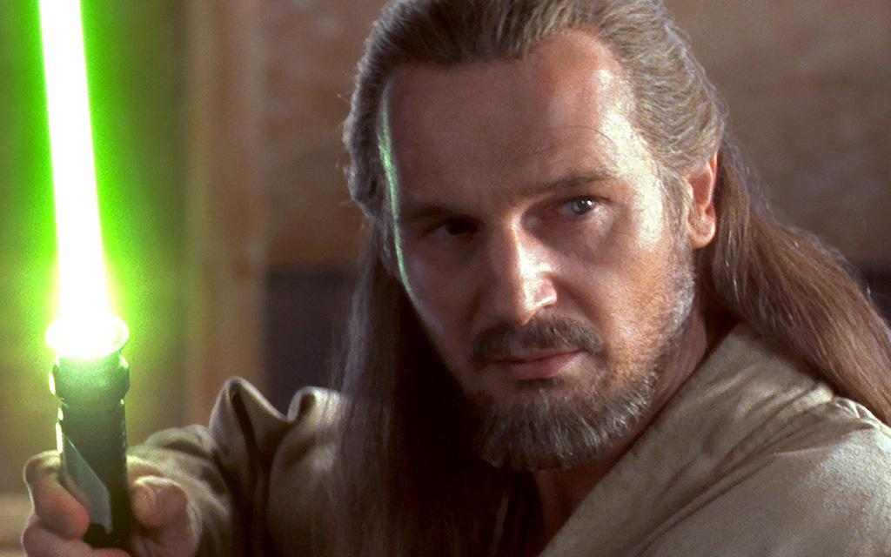

Новая семантика HTML5
Подробнее: Семантическая вёрстка, статья в двух частях.
<td class="list"><div class="oh"><div class="oh2"><table id="acont_foto"><tr><td><div class="item"><br class="clear"/><div style="text-align: center"><img src="prozrachniy.gif" border="0"/>
<!ENTITY % heading "H1|H2|H3|H4|H5|H6"><!-- There are six levels of headings from H1the most important to H6 the least important. --><!ELEMENT (%heading;)-- (%inline;)* -- heading --><!ATTLIST (%heading;)%attrs; -- %coreattrs, %i18n, %events -->
<a> <abbr> <address> <area> <article> <aside><audio> <b> <bdi> <bdo> <blockquote> <br> <button><canvas> <cite> <code> <command> <datalist> <del><details> <dfn> <div> <dl> <em> <embed> <fieldset><figure> <footer> <form> <h1> <h2> <h3> <h4> …
Элементы, составляющие поток документа.
<base> <command> <link><meta> <noscript> <script><style> <title>
Элементы, говорящие о документе.
<article> <aside> <section> <nav>
Элементы, определяющие структуру документа.
<h1> <h2> <h3> <h4> <h5> <h6><hgroup>
Элементы, озаглавливащие разделы документа.
<a> <abbr> <area> <audio> <b> <bdi> <bdo> <br><button> <canvas> <cite> <code> <command> <datalist><del> <dfn> <em> <embed> <i> <iframe> <img> <input><ins> <kbd> <keygen> <label> <map> <mark> <math> <meter><noscript> <object> <output> <progress> <q> <ruby> …
Элементы, составляющие содержимое документа.
<audio> <canvas> <img><iframe> <embed> <math><object> <svg> <video>
Элементы, встраивающие в документ стороннее содержимое.
<a> <audio> <button> <details> <embed><input> <iframe> <img> <keygen> <label> <menu><object> <select> <textarea> <video>
Элементы, предназначенные для взаимодействия с пользователем.
<div>.<article>, так и всего документа;<nav class="menu"><ul><li><a href="#">Главная</a></li><li><a href="#">Каталог</a></li><li><a href="#">О компании</a></li></ul></nav>
<nav class="pagination"><ul><li><a href="#">Назад</a></li><li><a href="#">1</a></li><li><a href="#">2</a></li></ul></nav>
<nav class="table-of-contents"><dl><dt>Оглавление</dt> <dd>стр. 1</dd><dt>Глава первая</dt> <dd>стр. 2</dd><dt>Эпилог</dt> <dd>стр. 3</dd></dl></nav>
<article><h1>Вёрстка со смыслом</h1><p>Вадим Макеев, Opera Software</p></article>
<article><header><h1>Вёрстка со смыслом</h1><p>Вадим Макеев, Opera Software</p></header></article>
<article><header><h1>Вёрстка со смыслом</h1><h2>Новая семантика HTML5</h2><p>Вадим Макеев, Opera Software</p></header></article>
<header><hgroup><h1>Вёрстка со смыслом</h1><h2>Новая семантика HTML5</h2></hgroup><p>Вадим Макеев, Opera Software</p></header>
<figure><img src="001.jpg" alt="Mmm, icicle"></figure>
Дополнительное содержимое в текстовом потоке.
<figure><img src="001.jpg" alt="Mmm, icicle"><figcaption>Mmm, icicle… By pepelsbey</figcaption></figure>
<figure><img src="001.jpg" alt="Mmm, icicle"><img src="002.jpg" alt="Oh, another one"><img src="003.jpg" alt="Delicious!"><figcaption>So many icicles!</figcaption></figure>
<figure><blockquote><p>Зомби зомби зомби.</p></blockquote><figcaption>Народная мудрость</figcaption></figure>
Элемент
<i>представляет собой фрагмент текста с дополнительным выделением или же экспрессивно-эмоциональным сдвигом относительно обычного текста — то, что обычно обозначается курсивом в типографике.
Элемент
<b>представляет собой фрагмент текста, который выделяется из окружающего его контекста, но не передает никакого особого значения и по правилам типографики обычно выделяется полужирным начертанием.
Nanotyrannus («карликовый тиран») принадлежит к семейству тиранозавров, и, возможно, является юной особью тиранозавра. Его череп был найден Чарльзом Гилмором в 1942-м году. Гилмор обозначил его как представителя нового вида Gorgosaurus lancensis.
<i class="taxonomy">Nanotyrannus</i> («карликовый тиран») принадлежит к семейству тиранозавров, и, возможно, является юной особью <i class="taxonomy">тиранозавра</i>. Его череп был найден <b>Чарльзом Гилмором</b> в 1942-м году. Гилмор обозначил его как представителя нового вида <i class="taxonomy">Gorgosaurus lancensis</i>.
<p><em>Быстро</em> позови доктора!Быстро позови <em>доктора!</em></p>
<p><strong>Граждане!</strong>При В.И. Матвиенколюбая сторона улицы<strong>опасна для жизни!</strong></p>
<!--[if lt IE 9]><script src="html5.js"></script><![endif]-->
Решение: p.ya.ru/media/html5.js
Вадим Макеев, Opera Software
Презентация: pepelsbey.net/pres/sense-coding